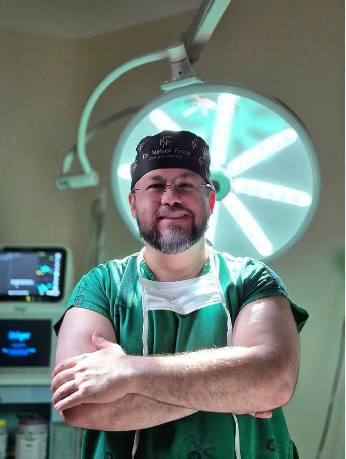
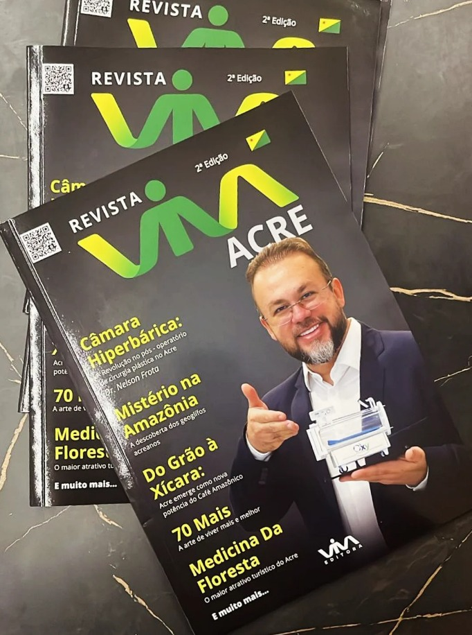

01Corpo
Lipo HD
Ultrassônica
Tecnologia e precisão para valorizar os contornos do corpo com planejamento individualizado.
Conhecer procedimento ↗Cirurgia plástica Rio Branco — AC
Atendimento individualizado, técnicas modernas e acompanhamento próximo para transformar planos em escolhas seguras e conscientes.

Possibilidades para você
Cada corpo carrega uma história diferente. Por isso, a escolha do procedimento começa por uma avaliação cuidadosa das suas necessidades, expectativas e condições de saúde.
Tecnologia e precisão para valorizar os contornos do corpo com planejamento individualizado.
Conhecer procedimento ↗Remodelação da região abdominal para tratar excesso de pele e flacidez.
Conhecer procedimento ↗Reposicionamento das mamas, com ou sem prótese, respeitando a harmonia corporal.
Conhecer procedimento ↗Próteses escolhidas de forma personalizada para proporção, equilíbrio e naturalidade.
Conhecer procedimento ↗Uso de gordura da própria paciente para realçar volume, projeção e contorno.
Conhecer procedimento ↗Rejuvenescimento da face com atenção à expressão e às características pessoais.
Conhecer procedimento ↗Tratamento das pálpebras para um olhar mais leve, preservando sua identidade.
Conhecer procedimento ↗Correção da forma e posição das orelhas com planejamento preciso e proporcional.
Conhecer procedimento ↗Combinação personalizada de procedimentos para mudanças corporais após a gestação.
Conhecer procedimento ↗Cirurgias para redefinir o contorno corporal após uma grande perda de peso.
Conhecer procedimento ↗Do primeiro encontro ao retorno
Decisões bem orientadas começam com informação, escuta e transparência.
Um encontro para compreender suas motivações, seu histórico e o que você espera da cirurgia.
A técnica e as possibilidades são definidas considerando anatomia, saúde e objetivos individuais.
Equipamentos avançados, atenção aos detalhes e conduta orientada pelo bem-estar do paciente.
Acompanhamento próximo no pós-operatório para orientar a evolução em cada fase.
A indicação de qualquer cirurgia depende de avaliação médica individual.
Dr. Nelson Frota
À frente da clínica, o Dr. Nelson Frota une ampla experiência, técnicas modernas e atenção genuína para conduzir cada paciente com segurança e clareza.
O trabalho parte de uma visão essencial: a cirurgia plástica deve respeitar a identidade de cada pessoa e buscar resultados equilibrados, naturais e coerentes com seu corpo.

Revista Viva Acre · 2ª ediçãoMedicina perto da comunidade
Dr. Nelson Frota foi destaque de capa da Revista Viva Acre, compartilhando conhecimento sobre recursos aplicados à recuperação pós-operatória e aproximando informação médica da população acreana.
Segurança e confiança nascem quando o paciente compreende cada passo da sua jornada.
Acompanhe no Instagram ↗Antes de decidir
A consulta é o momento certo para aprofundar todas as orientações sobre indicação, preparo e recuperação.
Enviar minha dúvidaA indicação é feita após avaliação presencial, análise do seu histórico de saúde e uma conversa aberta sobre objetivos e expectativas.
É um encontro individual para conhecer suas necessidades, esclarecer possibilidades, avaliar condições clínicas e orientar os próximos passos.
Sim. O acompanhamento faz parte do cuidado, com retornos e orientações de acordo com o procedimento e a evolução de cada paciente.
Algumas combinações podem ser consideradas, mas a decisão depende de avaliação médica, condições de saúde e critérios de segurança.
O período varia conforme a cirurgia e a resposta individual do organismo. Na consulta, você recebe orientações específicas para o seu caso.
Sua jornada pode começar aqui
Agende sua avaliação e receba uma orientação individualizada da equipe.
Agendar pelo WhatsApp